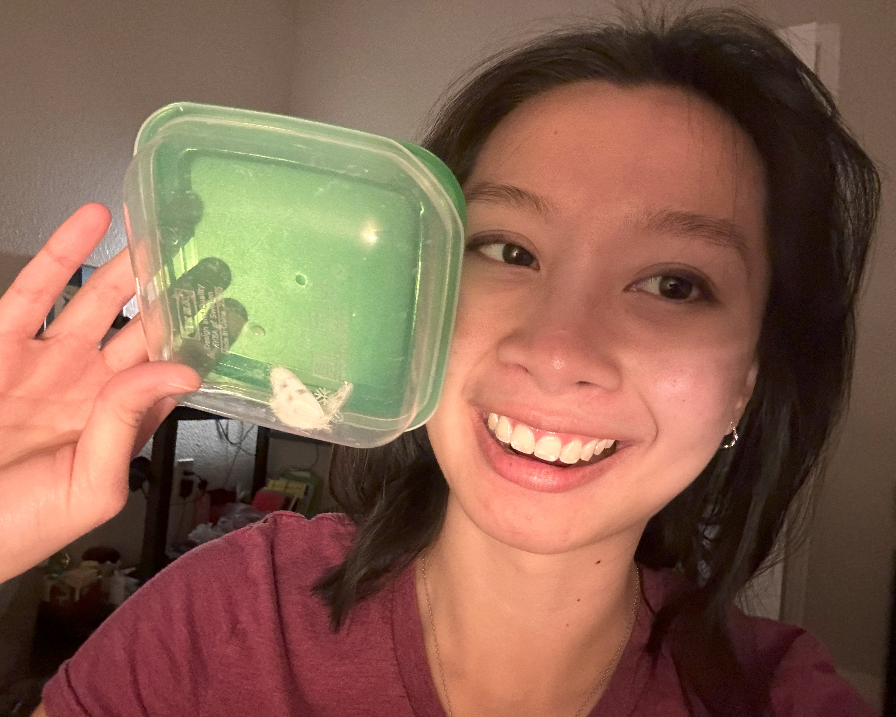
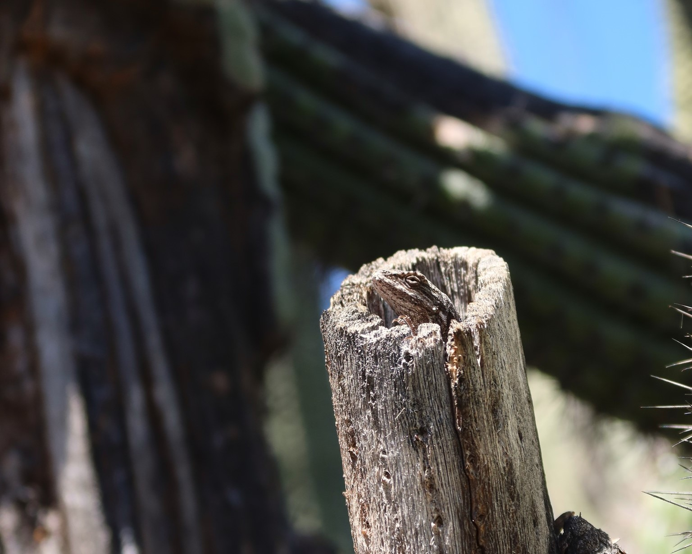

5/11/2024 (E) We spotted this hummingbird during our customary pre-departure morning walk. Definitely a cute little guy.
5/10/2024 (M) This beefsteak of a lizard decided to pose for Ethan while we were exploring the little garden on UA’s mall. 10/10 model if I may say so myself. (Ethan is an 100/10 by that standard).
5/9/2024 (E) I thought it was very nice of this captured blister beetle to pose for this picture.
5/9/2024 (M) It quite possibly seems like this seven-spot ladybird (Coccinella septempunctata) may be about to eat something (if you can see the lil white oval thing it’s looking at). I think Ethan snacked on some club crackers shortly before we encountered this carnivorous cutie.
5/9/2024 (E) I think this might be my favorite photo from the hike! Pretty sure the little bubbles are frog eggs, perhaps a product of the same union shown in the previous photo.
5/9/2024 (M) Smelled like teen spirit in this stream. They were definitely McLovin’ it.
5/9/2024 (E) This hungry spider was our first bug finding of our trip to Catalina State Park. Taking this photo turned out to be a good exercise in playing with the settings on my camera.
5/7/2024 (M) Look at these ants congregating around their mildly convex hill… We could only dream of such structure and sensibility in current society. What a tragedy.
4/30/2024 (M) I passed by this road runner during my evening walk and thought it looked funny with its tush hanging off the fencing. He decided to hop off and skidaddle after I took a few shots, probably to go look for dinner.
4/30/2024 (M) It was another day of dumping things from my snack container into my bag – this time it was chocolates and for this carpenter bee (Xylocopa spp.). It seemed like it was nearing the end of its life as it threw up a good amount of sugar water (or maybe it just pissed) all over my snack container. It did actually die around lunch time.
4/28/2024 (E) This little spider was hanging out on the purple flowers growing in my yard. I’m not sure what he was doing up there, maybe just kinda chillin.
4/27/2024 (E) My good deed for the day today was helping this snail cross the sidewalk. It was a little scared at first, but deep down I’m sure it was appreciated.
4/21/2024 (E) I was trying to get pictures of some squirrels who have moved in to the grapevine growing on my porch, but they weren’t available. Getting this picture of a bee was some consolation.

4/19/2024 (M) It was 7:36pm at the Tucson Racquet and Fitness Club when I emptied a small tupperware of mango snacks into my tennis bag for this tiny flying sausage. My boss informed me the next day that it’s possibly a Pontia occidentalis (the western white) butterfly. He too is now in a box.
3/27/2024 (E) Not long after returning to Salt Lake City, I found a very sleepy wasp on my doorstep. I seized the opportunity to trap it in a Better Than Bouillon® jar (not sponsored (yet)) and it is now chillin’ in my freezer. I can’t recall what Maxine ID’d it as specifically, but maybe she’ll add her own comment here. (M) Maxine thinks it’s a Polistes wasp but she’s not 100% sure. There’s many wasps wasping out there.
3/9/2024 (E) Under that plastic deli container is the first addition to our collaborative bug box! It was very interesting watching the capture process. Maxine sat there for probably five minutes waiting for the butterfly to calm down (another Empress Leilia, if I remember correctly) before trying to bag it. It is now in a box.
3/9/2024 (E) What you can’t see out of frame is Maxine’s hand creeping up on this poor unsuspecting butterly to capture it. We ended up putting it back because, as you can see here, its wings are a little messed up. Still a cute little guy, though.
3/9/2024 (M) I spent a lot of time running after unknown white butterflies (two types – one with a red stripe and another with black spots). Jerks. But thankfully this Empress Leilia let me take it home for our collaborative bug collection.
3/9/2024 (M) There’s Ethan in the background admiring this rugged butterfly, which I found out from some iNaturalist guy is an “early spring form” of Empress Leilia (Asterocampa leilia). That’s because of the dark margin and pale interior… or so he says.
3/4/2024 (E) Pushing the limits of my camera’s ability to focus on tiny things to get a shot of these aphids hanging out on a plant.

3/4/2024 (E) An unsuccessful bug search in the garden on the UofA mall was redeemed by seeing this little guy hanging out in a cactus. I think that’s where I’d want to live if I was a tiny lizard.
11/14/2023 (M) Saw this Urbane Digger Bee (Anthophora urbana) happily sipping some breakfast while I was on my way to the library for a meeting. It’s carrying a good stash of pollen too, maybe they’re having a hive party later.
10/12/2023 (M) Ethan does take very cool bee pictures (actual bee pictured here). This little one (which is the Western Honey Bee, Apis mellifera) is drinking from a fountain. You can’t see it but the fountain is a sculpture of a head.
9/19/2023 (M) A Queen Butterfly (Danaus gillipus) snacking on some flower outside the University of Arizona Health Sciences Library. Do I know what kind of flower that is? Nope. Maybe one day though.
9/16/2023 (M) I think Ethan takes very nice pictures so I will include this very cool bee he sent me as well. Maybe it’s a wasp though, who knows. (It really is actually a Yellowjacket though, Vespula or Dolichovespula spp.)